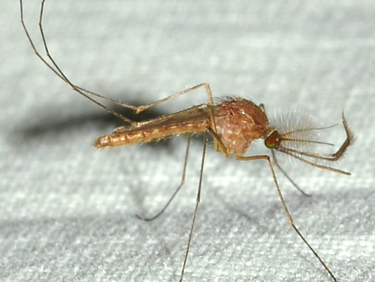

Culex Pipiens

Culex pipiens is the common house mosquito—the one that tries to bite you at night and wakes you up with its dreadful buzzing. The typical behavioural pattern of this nocturnal pest is to come into our houses and attack us between sunset and sunrise. A single Culex pipiens, eager to get enough blood to lay its eggs, can ruin your night with multiple bites: the female of the species needs this blood meal to complete her biological cycle.
Culex Restuans

The larvae are found in a wide variety of aquatic habitats, such as ditches, pools in streams, woodland pools, and artificial containers. The females are regarded as troublesome biters by some observers, although others say that they rarely bite man. (Carpenter and LaCasse 1955:290)
Culex Salinarius
Culex salinarius is a mosquito species that accepts birds as well as mammals. As a result, it has been incriminated as a potential bridge vector of the encephalitis viruses. Virus isolations have been made from wild populations but are a fairly rare occurrence. Laboratory studies suggest that the mosquito has an extremely high threshold of infection, and probably only functions as a secondary vector during epizootic episodes.
Culex Territans

Culex territans is a frog feeding mosquito that has no known economic importance. The species shares habitat with a wide variety of amphibians and rarely, if ever, feeds on warm blooded animals. It is possible that the mosquito plays a role in the transfer of arboviruses to cold blooded overwintering hosts but the hypothesis has never been fully documented. Like Wyeomyia smithii, the mosquito is a tiny scientific curiosity that poses no threat to mankind.